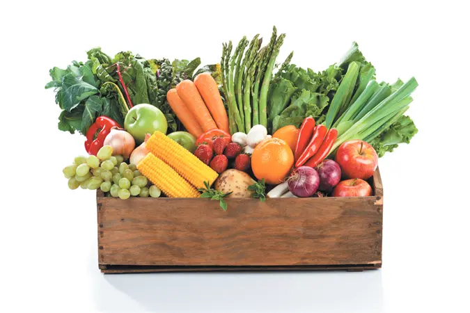
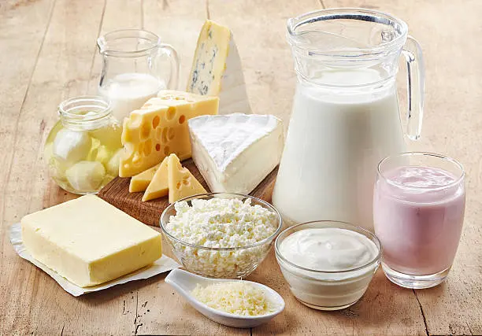

Overview
At Farmers Market, we connect you with the best local vendors offering fresh fruits, vegetables, baked goods, and dairy products. Our mission is to support local farmers and provide our community with healthy, sustainable food options.
Latest News
Featured Seasonal Items
Our Vendors

Fresh Farms
Organic fruits and vegetables.

Bake House
Delicious homemade baked goods.

Dairy Delight
Fresh dairy products from local farms.